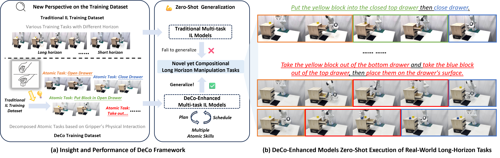
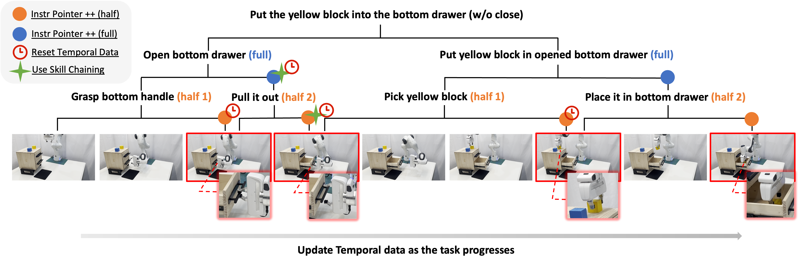
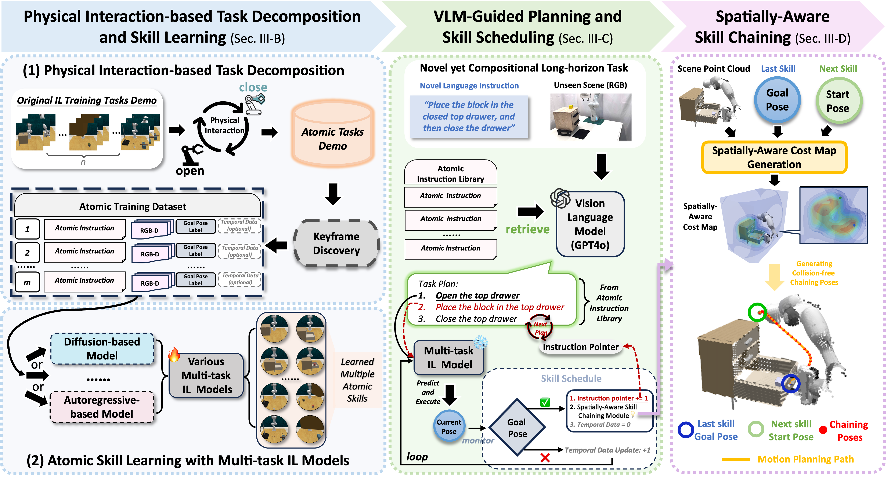
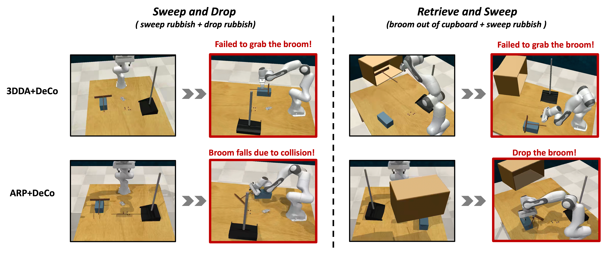

Generalizing language-conditioned multi-task imitation learning (IL) models to novel long-horizon 3D manipulation tasks remains a significant challenge. To address this, we propose DeCo (Task Decomposition and Skill Combination), a model-agnostic framework compatible with various multi-task IL models, designed to enhance their zero-shot gener- alization to novel, compositional, long-horizon 3D manipulation tasks. DeCo first decomposes IL demonstrations into a set of modular atomic tasks based on the physical interaction between the gripper and objects, and constructs an atomic training dataset that enables models to learn a diverse set of reusable atomic skills during imitation learning. At inference time, DeCo leverages a vision-language model (VLM) to parse high-level instructions for long-horizon tasks, retrieve the relevant atomic skills, and dynamically schedule their execution; a spatially-aware skill-chaining module then ensures smooth, collision-free transitions between sequential skills. We evaluate DeCo in simulation using DeCoBench, a benchmark specifically designed to assess zero-shot generalization of multi-task IL models in compositional long-horizon 3D manipulation. Across three representative IL models—RVT-2, 3DDA, and ARP—DeCo achieves success rate improvements of 66.67%, 21.53%, and 57.92%, respectively, on 12 novel compositional tasks. Moreover, in real-world experiments, a DeCo-enhanced model trained on only 6 atomic tasks successfully completes 9 novel long-horizon tasks, yielding an average success rate improvement of 53.33% over the base multi-task IL model.

We introduce DeCo, a model-agnostic framework that enables multi-task imitation learning models to generalize zero-shot to novel long-horizon 3D manipulation tasks by retrieving, scheduling, and chaining atomic skills.



The ability of the base multi-task IL model to learn atomic skills is crucial for DeCo's generalization performance in long-horizon tasks. However, the model's generalization capability relies not only on its learning of atomic skills but also on other factors. Visual robustness is a key factor: different models have varying levels of visual robustness when confronted with previously unseen combinations in scenarios. If the base multi-task IL model's visual capability cannot effectively handle these variations, it will directly impact DeCo's ability to generalize in multi-task IL models when handling combined long-horizon tasks. We provide visual failure cases of 3DDA+DeCo and ARP+DeCo to further illustrate this limitation. Although 3DDA+DeCo and ARP+DeCo excel in learning atomic tasks, they encounter failures when facing the compositional long-horizon tasks Sweep and Drop (sweep rubbish + drop rubbish) and Retrieve and Sweep (broom out of cupboard + sweep rubbish). Even though DeCo can plan and schedule the corresponding atomic skills, both 3DDA and ARP struggle with visual processing in unseen combination scenarios. As a result, 3DDA+DeCo and ARP+DeCo fail to execute the atomic skills, which prevents them from completing the entire long-horizon tasks.
Prompts in Simulation Environments:
Prompt Examples (full) |
Prompt Examples (half)